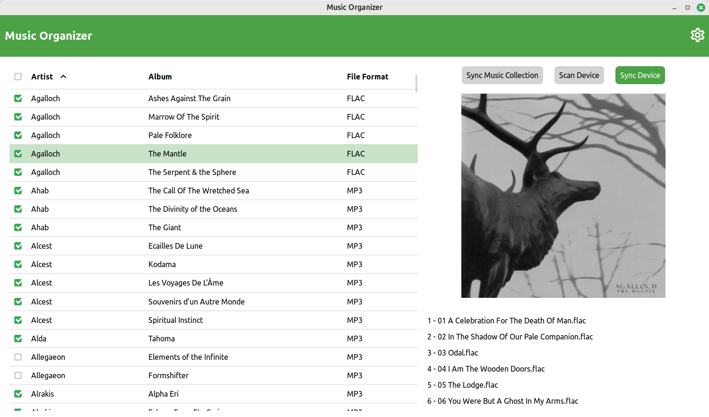
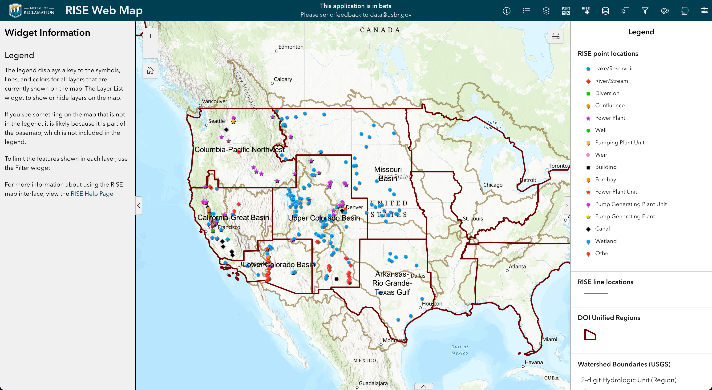
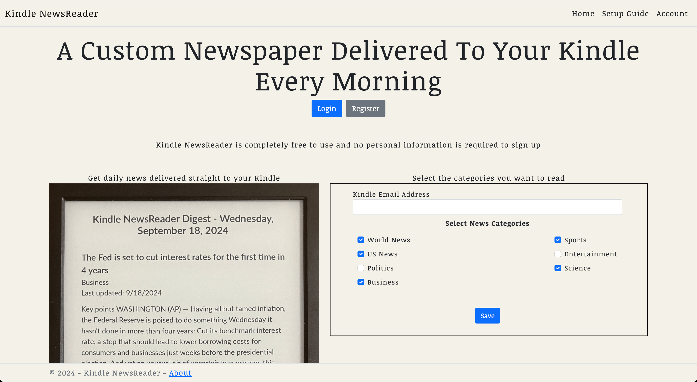

Joshua Landau
Software Developer
Projects
Audio Ally

A desktop application I made to easily track and manage the albums in my personal music collection and sync files to my iPod. This application uses the Wails framework to create a Svelte-powered WebView for a front end. I come back to this project regularly since I use it so often, and right now I am working on preparing it for public distribution and integrating cloud backups.
RISE Web Mapping Interface

A web mapping interface that I built as the GIS Developer at DecisionPoint. This application is a complete rebuild from the previous version which I had the opportunity to lead from the beginning. It uses ArcGIS Experience Builder Developer Edition to seamlessly integrate with the Bureau of Reclamation's GIS data and provide both essential and custom functionality that allows users to interact with publicly available data in a modern and responsive way.
Kindle NewsReader

An application that generates customizable daily newspapers and automatically delivers them to registered Kindle devices every morning. This application consists of two parts: an ASP .NET Core MVC front end and a .NET console application. The front end allows users to sign up and configure their Kindle, as well as select specific categories they want to read, while the console application is scheduled to scrape news articles, generate the newspapers, and deliver them to the devices.
Experience
GIS Software Developer
DecisionPoint Corp.
February 2024 - Current
In this role I was the GIS Developer on the RISE team, contracted by the US Bureau of Reclamation. Some notable projects I worked on include migrating the old map interface from ArcGIS Web AppBuilder to ArcGIS Experience Builder and rewriting a .NET codebase which performs data aggregation and map generation. In addition, I also performed regular development tasks including updating the API, containerizing services for deployment, and assisting with the front end.
GIS Developer
Innovate Inc.
April 2022 - February 2024
At Innovate I have been able to work on a wide range of interesting projects for both private and government clients. Some of the tasks that I frequently work on include developing new and existing REST API services using Django REST Framework, building complex user interfaces with Angular, and integrating geospatial datasets into our applications with ESRI's ArcGIS Enterprise tooling.
Lead Back-End Software Engineer - Freelance
SmartIntro
March 2023 - October 2023
As lead back-end engineer I have been able to design and implement this application's architecture and back-end services from the ground up. This has included developing a Django REST API, implementing scalable and asynchronous background processing with Celery, and employing Docker to containerize and deploy the application via an Nginx web server. I also contributed to the application's user interface, which is built with React using Material UI.
Environmental GIS Analyst
Tehama LLC
October 2020 - April 2022
My GIS knowledge grew immensely during my time at Tehama. The core responsibilities of this position involved interpreting, manipulating, visualizing, and managing large geospatial datasets. The main tools I used to accomplish these tasks included Python, SQL, and ArcGIS Pro.
Geospatial Technician
Quantum Spatial
August 2019 - September 2020
Being my first full-time position after graduting from Florida State University, my time at Quantum Spatial was foundational to my professional development. In this position I was responsible for creating and maintaining many large geospatial datasets. I also had the opportunity to use my Python skills to develop some custom automated workflows for data processing and formatting.
Testimonial
"Searching for a Python wizard who's as personable as he's proficient? Meet Joshua turning coding crises into software victories with ease and efficiency. My SaaS project was on the verge of becoming another unfinished tale when Joshua stepped in. Our front end developer left a lot unfinished and a working prototype was nowhere to be found. Joshua, however, turned the tables around swiftly and adeptly. His unparalleled skills and relentless determination transformed our precarious situation into a stunning MVP in a flash. But Joshua's talents aren't restricted to coding. His friendly nature and stellar communication skills make him an excellent team player. When looking for a professional who seamlessly combines coding competence with a congenial demeanor, Joshua is the clear choice."
Jordan Silvera, Founder of SmartIntro